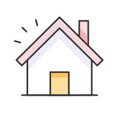

-
 1회기
1회기
왜 우리 아이에게
이런 일이 생겼을까요? -
 2회기
2회기
학교폭력
대응방법 알기 -
 3회기
3회기
예방과 재발
방지하기 -
 4회기
4회기
부모는 무엇을 해야 할까요?
- 시작하기
- 첫째,
학교폭력 실태 - 둘째,
청소년 발달특성과
학교폭력 - 셋째,
피해를 말하지 못하는
아이의 속마음 - 넷째,
내가 보였던
반응 되감기 - 정리하기
우리 아이들과 학교 폭력
상해, 폭행, 감금, 협박, 약취·유인, 명예훼손·모욕 공갈, 강요 및 성폭력, 따돌림,
정보통신망을 이용한 음란·폭력정보 등에 의하여 신체·정신 또는 재산상의 피해를 수반하는 행위를 말합니다.
 학교폭력의 원인
학교폭력의 원인-
자기 존재의 인정 욕구
 사람은 누구나 타인에게 칭찬받고 싶고, 인정받고 싶은 욕구를 가집니다. 학교에서 좋은 성적이라고 하는 공적 영역에서 인정받지 못하는 청소년들이 비공적인 영역 즉 또래간 지위획득을 위한 행동으로 더 양한 아이들을 괴롭히는 우월함을 얻고자 하는 심리적 특성이 있습니다.
사람은 누구나 타인에게 칭찬받고 싶고, 인정받고 싶은 욕구를 가집니다. 학교에서 좋은 성적이라고 하는 공적 영역에서 인정받지 못하는 청소년들이 비공적인 영역 즉 또래간 지위획득을 위한 행동으로 더 양한 아이들을 괴롭히는 우월함을 얻고자 하는 심리적 특성이 있습니다. -
또래와의 갈등
청소년들은 따돌림 당하는 아이들이 당할 만한 이유가 있으며, 같이 피해를 입을까봐 적극적으로 피해친구를 옹호하지 못하고 방관하거나 괴롭히는 행동에 가담하게 됩니다.
또래압력에 쉽게 굴복하는 것은 청소년들의 정체감을 확립시켜주는 교육이 부재하여 집단속에서 자기존재를 확인받으려는 경향때문인 것으로 보입니다. -
부모와의 갈등
• 부모로부터 충분한 사랑과 관심을 받지 못하거나 지나치게 자유가 허용되는 경우, 공격적 행동을 보였을 때 명확한 한계를 훈육하지 않았을 경우 공격적인 성향으로 성장할 수 있습니다.
• 부모들의 기대가 지나치게 높거나 기대가 전혀 없는 가정환경에서도 폭력적인 성향을 보일 수 있습니다.
→ 부모의 일관된 애정과 관심, 사회적 지지는 학교폭력 행동을 감소시킬 수 있는 중요한 요인입니다. -
입시로 인한 스트레스
철저히 주입식 지식 위주, 교과서 중심의 학습을 위한 교육과 대학입시를 중심으로 이루어지는 교육, 하루 중 대부분의 시간을 학교에서 공부만을 강요당하는 대다수 학생들은 매사 긴장하고 신경이 예민해져 사소한 일에도 공격적이게 됩니다.
-
대중매체, 인터넷의 폭력성 등
대중매체의 폭력성과 극단적 이기주의와 배타적 가족주의, 물질 중심의 배금주의 사상이 학교폭력 원인이 될 수 있습니다.
- 학교폭력의 이상한 특징
- 또래문화 속에서 일어나는 범죄
- 철저한 고립과 관계의 파괴
- 가해와 피해의 악순환
- 당하지 않으려면 보고도 못 본 척!
- 내 문제가 아니면 누구도 관심 갖지 않는다.
- 가해자/피해자 징후
-
학교에서가해자
친구들이 자신에 대해 말하는 걸 두려워 한다.
교사가 질문할 때 다른 학생의 이름을 대면서 그 학생이 대답하게 한다.
교사의 권위에 도전하는 행동을 종종 나타낸다.
자신의 문제행동에 대해서 이유와 핑계가 많다.
화를 잘 내고, 공격적・충동적이다.
친구에게 받았다고 하면서 비싼 물건을 가지고 다닌다.
자기 자신에 대해 과도하게 자존심이 강하다.
작은 칼 등 휴기를 소지하고 다닌다.
등하교시 책가방을 들어주는 친구나 후배가 있다.피해자
지우개나 휴지, 쪽지가 특정 아이를 향한다.
특정 아이를 빼고 이를 둘러싼 아이들이 이유를 알 수 없는 웃음을 짓는다.
자주 등을 만지고 가려운 듯 몸을 자주 비튼다.
교복이 젖어있거나 찢겨 있어 물어보면 별일 아니라고 대답한다.
교복 등에 낙서나 욕설이나 비방이 담긴 쪽지가 붙어있다.
평상시와 달리 수업에 집중하지 못하고 불안해 보인다.
교과서가 없거나 필기도구가 없다.
코피나 얼굴에 생채기가 나 있어 물어보면 괜찮다고 한다.
자주 점심을 먹지 않거나 점심을 혼자 먹을 때가 많고 빨리 먹는다.
종종 무슨 생각에 골몰해 있는지 정신이 팔려있는 듯이 보인다. -

가정에서가해자
부모와 대화가 적고, 반항하거나 화를 잘 낸다.
사주지 않은 고가의 물건을 가지고 다니며, 친구가 빌려준 것이라고 한다.
친구관계를 중요시하며, 밤늦게까지 친구들과 어울리느라 귀가시간이 늦거나 불규칙하다.
집에서 주는 용돈보다 씀씀이가 크다.
다른 학생을 종종 때리거나, 동물을 괴롭히는 모습을 보인다.피해자
학교성적이 급격히 떨어진다.
학원이나 학교에 무단결석을 한다.
갑자기 학교에 가기 싫어하고 학교를 그만두거나 전학을 가고 싶어 한다.
노트나 가방, 책 등에 낙서가 많이 있다.
괴롭힘에 의한 다른 아이들의 피해에 대해 자주 말한다.
문자를 하거나 메신져를 할 친구가 없다.
전화벨이 울리면 불안해하며 전화를 받지 말라고 한다.
자신이 아끼는 물건을 자주 친구에게 빌려주었다고 한다.
몸에 상처나 멍 자국이 있다.
집에 들어오면 피곤한 듯 주저앉거나 누워있다.
전보다 자주 용돈을 다라고 하며, 때로는 훔지기도 한다.
복수나 살인, 칼이나 총에 대해 관심을 보인다.